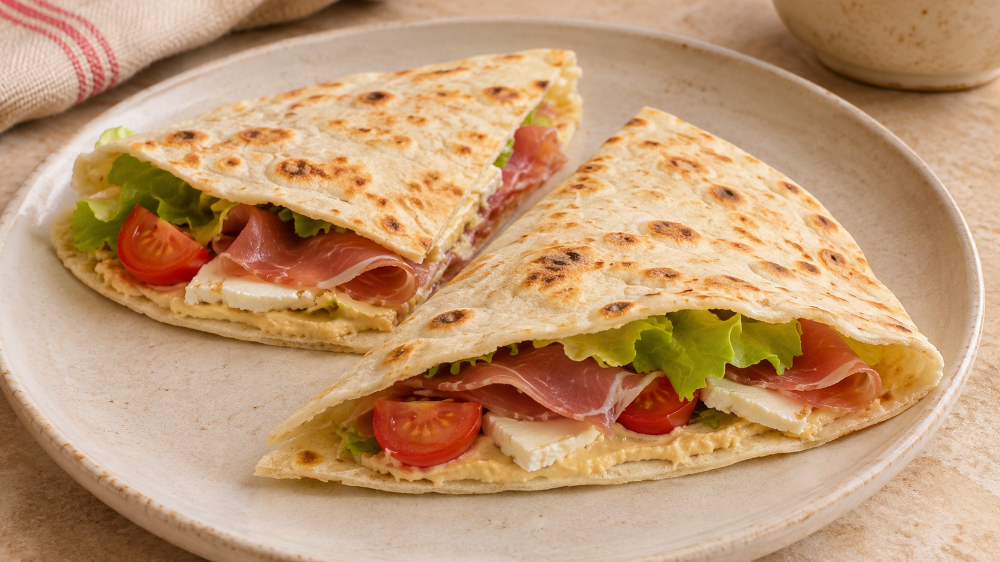

La Piadina di Marisa

Más de Envueltos y bocadosPDF para imprimir · A4
Ingredientes
- 2 piadinas medianas (22-25 cm)
- 80 g de hummus
- 160 g de tomates cherry
- 40 g de brotes de lechuga
- 40 g de jamón en lonchas finas
- 40 g de queso de cabra en lonchas
Preparación
Claves
Tomates escurridos y brotes bien secos. Hummus en capa fina y dorado breve para que la base siga flexible. El golpe final de sartén se hace solo con hummus y queso dentro; jamón, cherry y hojas entran después, fuera del fuego. No añadas sal de entrada: prueba antes el jamón, el queso y el hummus.
Opciones
Jamón y montaje: Usa jamón curado o cocido, en lonchas finas. No hace falta aceite en la sartén antiadherente.
Otros rellenos: Las cantidades siguientes son por piadina y sustituyen al relleno principal. Duplica para dos. Conserva una base por persona; los 10-15 min corresponden solo a la versión principal.
Pollo, calabacín y salsa de yogur: Por piadina: 100 g de pollo, 100 g de calabacín, 10 g de rúcula o canónigos, 30 g de yogur natural y ½ cucharadita de aceite. Saltea el calabacín en medias lunas finas 6-8 min; reserva. Cocina el pollo en tiras hasta que esté completamente hecho (74 °C en el centro). Monta con el yogur y las hojas fuera del fuego.
Hummus, berenjena asada y tomate: Por piadina: 40 g de hummus, 100 g de berenjena ya asada, 50 g de tomate y una pizca de comino. Para asar la berenjena, córtala en láminas, pincela con ½ cucharadita de aceite por ración y hornea a 200 °C, 20-25 min, hasta tierna. Déjala templar; añade el tomate escurrido al final.
Espinacas, champiñones y requesón: Por piadina: 60 g de espinacas, 100 g de champiñones, 50 g de requesón, ½ cucharadita de aceite y pimienta. Saltea los champiñones laminados 5-7 min; añade las espinacas 1-2 min y deja evaporar el agua. Fuera del fuego, incorpora el requesón bien escurrido y rellena.
Sardinas, pimientos asados y rúcula: Por piadina: 60 g de sardinas en conserva escurridas, 60 g de pimientos asados escurridos y 10 g de rúcula. Si vienen en aceite, usa hasta ½ cucharadita para dar jugosidad. Templa solo la piadina; añade el relleno fuera del fuego y evita recalentarlo.
Fuente
Combinación propuesta en casa, con alternativas de relleno desarrolladas para Casa Marisa.